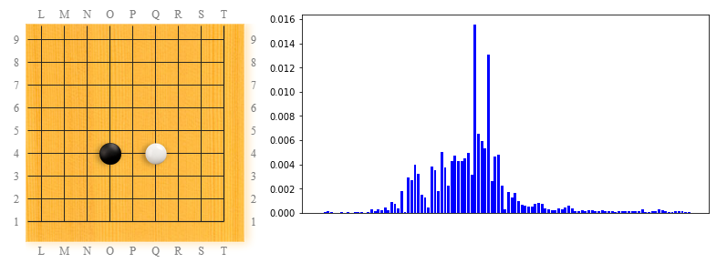

(This is a follow up from the overview of LeelaZero's training patterns page).
This article is about the corner patterns that occur in LeelaZero's training games, if we focus only on the ones that contain exactly two stones in a board quadrant, one of each color. I think this is interesting because it is a fundamental decision in fuseki: how to approach an opponent stone.
This is kind of obvious by now: the top pattern in this category is 3x3 invasion against a 4x4 stone.
The 2nd most popular pattern in this category is keima-kakari. The interesting part is the sharp increase in popularity in the most recent third part of the training history. In the earlier versions, LeelaZero played the contact move at 4x4 instead of approaching.
I see this as a variation of the 3x3 invasion. White does this when the lower side is more important, and letting black block here (if one starts by invading at 3x3 instead) is not desirable.
The same pattern can also occur commonly as a contact play against the opponent's 3x4 stone - something I have definitely seen LeelaZero playing. Unfortunately there is not way for now to distinguish between the two cases.
What is for humans the fundamental way to approach an opponent's 4x4 stone, for LeelaZero seems to be just a "meh" move. Overall, LeelaZero has improved her impression about this move in the 2nd half of the training history (compared to the first half).
An alternative to the keima-kakari against hoshi, ikken-kakari is considered by humans to be a softer version: does not do that much damage against the corner if ignored, but has the advantage to make harder for the opponent to counter-attack. LeelaZero discovered and enjoyed it for a while before keima-kakari, then abandoned it pretty much, it definitely prefers keima-kakari when it has to choose between just these two options.

Ikken-kakari is another very common approach against a 3x4 stone. I think in human games it is close to 50-50 when choosing between keima-kakari and this one. While LeelaZero considers both, it prefers keima 20 times more compared to this one, it is a huge difference.
Fast forwarding to the pattern in position 25: looks like LeelaZero experimented quite a bit with playing 5x5 against a 4x4 stone (or is it the other way around?), and this pattern still comes up in recent versions (quite unfrequently).
Jumping a few more spots, we find another common human move: ikken-kakari against the opponent's 3x3 stone. This pattern became much less frequent in the second half of the training games, maybe also because 3x3 as an opening move is played less often.
Around top 50 we can find what humans consider to be a vulgar approach against 3x4. This surged in popularity in the 2nd half of the training history. It is less popular in the most recent 25% of games or so, but it seems to still be a valid option for LeelaZero.
Ogeima-kakari is about 10 times less popular in LeelaZero's games (2 in 10K patterns in recent versions), compared to the more aggressive keima-kakari (2 in 1000 patterns). This seems to agree with the human ratio of choosing between the two moves.
I associate this high and distant approach move with Go Seigen for some reason - I don't think he invented it, but it comes up a lot in the games from that era. The official Japanese name is "nikken-takagakari" because it is a two-point jump (nikken), it is high ("taka(i)") (4th line instead of 3rd), and is an approach ("kakari" - turns into "gakari" just because it sounds better in the context). Interestingly, this pattern went extinct for several versions, then it raised from the dead and it became "a regular" at about one in 100K frequency.